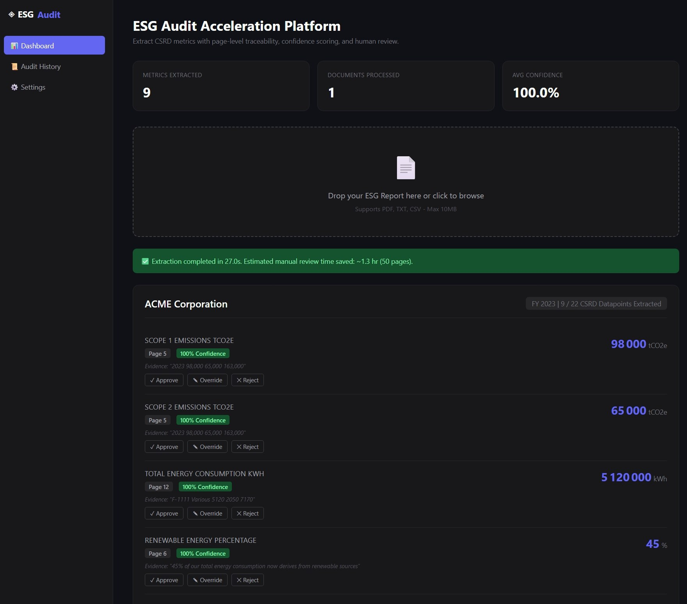
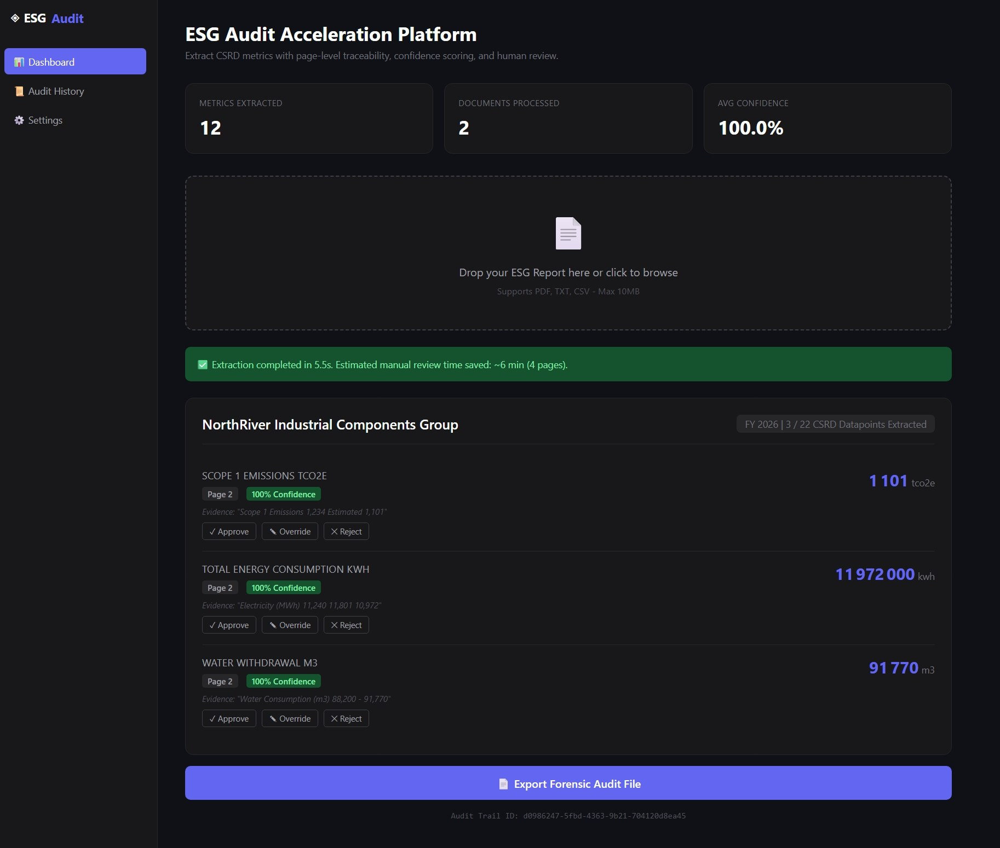
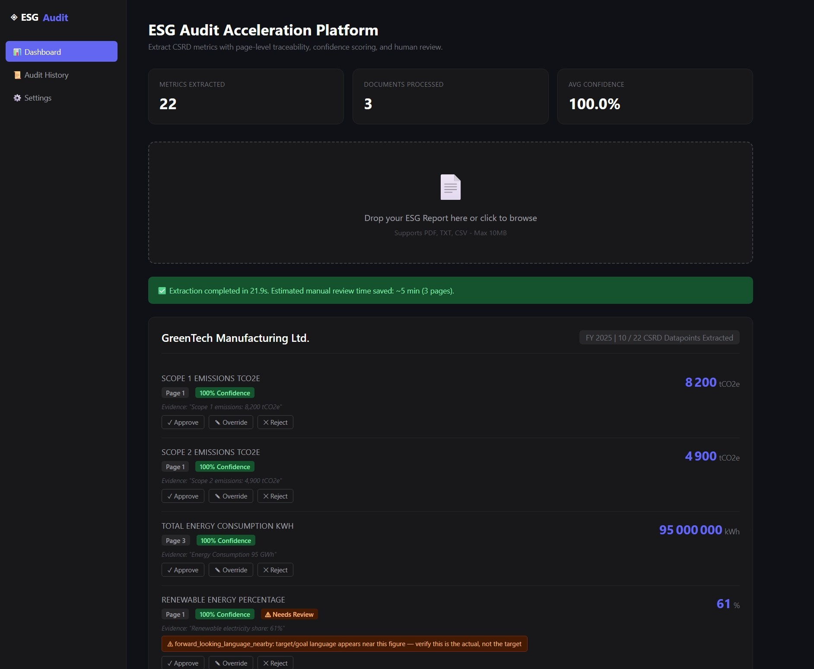

Scope3 reads sustainability reports and extracts CSRD-aligned metrics automatically — emissions, energy, workforce, governance — each one linked to the exact page and quote it came from.
A 40-page sustainability report comes in. An analyst reads it, finds the emissions table, checks the workforce section, copies numbers into a spreadsheet — and if a reviewer later asks "where did this figure come from," the answer is a memory, not a citation.
That's not a training problem. It's a structural one — manual extraction has no built-in trail back to the source.
Extraction is the easy part. What matters is whether you can trust — and defend — what came out.
Reads a report and pulls structured metrics across emissions, energy, water, waste, workforce, and governance — 22 CSRD-aligned datapoints in total.
Every figure is checked against the exact page it's cited from — not "somewhere in the document," but the specific page the extraction claims.
Flags the cases a first read often misses — a 2030 target mistaken for a reported actual, or a unit that doesn't match — before they reach your export.
No slides. The terminal, the upload, the extraction, the flags, the export — as it actually runs.



Runs on your own infrastructure. Client documents never leave your servers — not during a pilot, not ever.
22 CSRD-aligned datapoints across climate, workforce, and governance — not the full ESRS taxonomy. Built to speed up the metrics you extract most often, not to replace materiality work.
Every metric is approved, overridden, or rejected by a person before it's final. Scope3 does the first pass — your team still owns the judgment.
We don't quote a flat fee cold. The 3-day pilot measures how much manual time it actually saves your team — the license price is set from that, so you can see the math yourself before you pay anything.
Run it against a real or anonymized client report and see exactly what it extracts — before any conversation about cost.
Request a 3-day pilot →